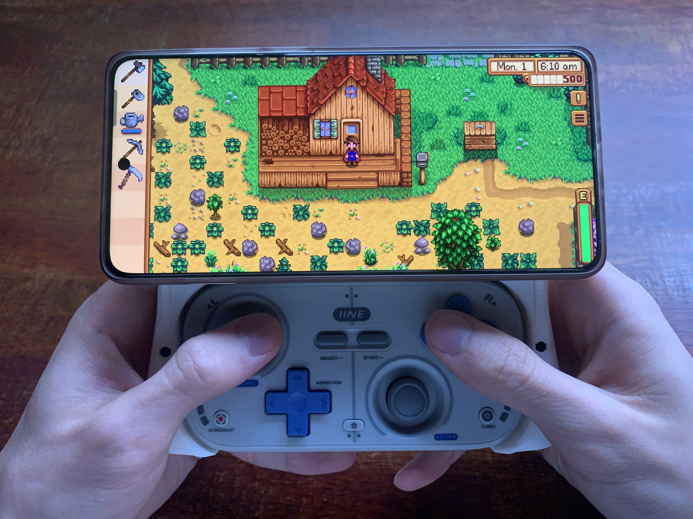
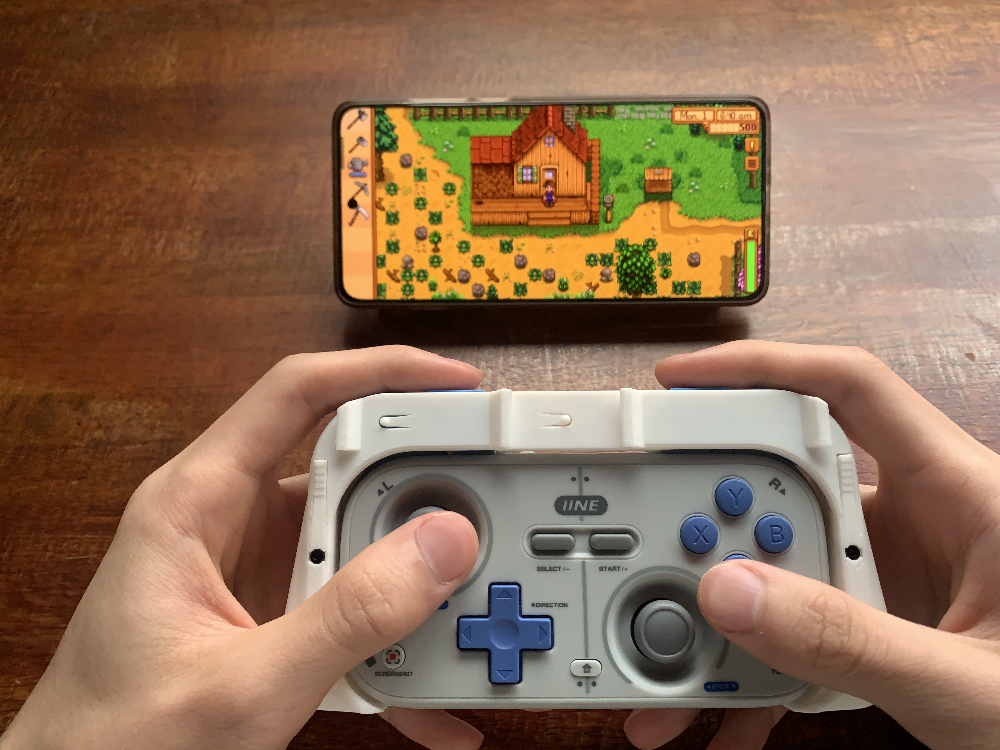
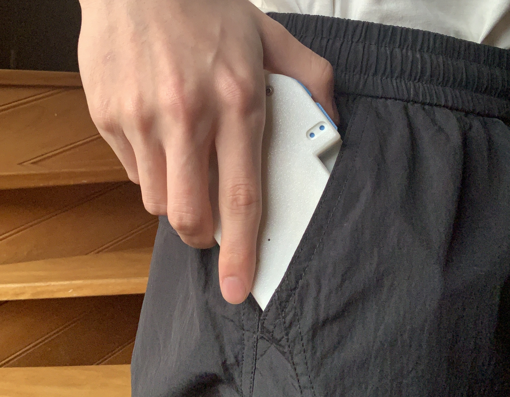

功能介绍：
这是一款我设计给手机的折叠磁吸游戏手柄。该手柄可拆卸并转换为手机支架，兼具便携性与多功能性。 设计初衷是在集成多种实用功能的同时，优先考虑缩减体积，且尽可能不牺牲握持的舒适度。
如何使用：
向上滑动顶部面板后，两侧的弹性机关会将面板锁定到位。
按下弹性杠杆即可解锁，将面板缩回至折叠位置，底部设有两个限位销防止面板过度移动。
若继续用力推动，顶部面板将会分离。利用面板背部的机械结构，可将其展开为手机支架，让用户能将手机放置在桌面上，更舒适地进行游戏。
设计初衷：
现代 Android 手机已能运行轻量级 Windows 游戏，但触屏操作体验远不如实体手柄。
同时我发现市面上大多数手机手柄往往体积笨重、缺乏便携性，且信价比较低。

因此，我购买了一款平价手柄作为基础，在 Fusion 360 中重新设计了外壳，并通过 3D 打印制作了所有组件。